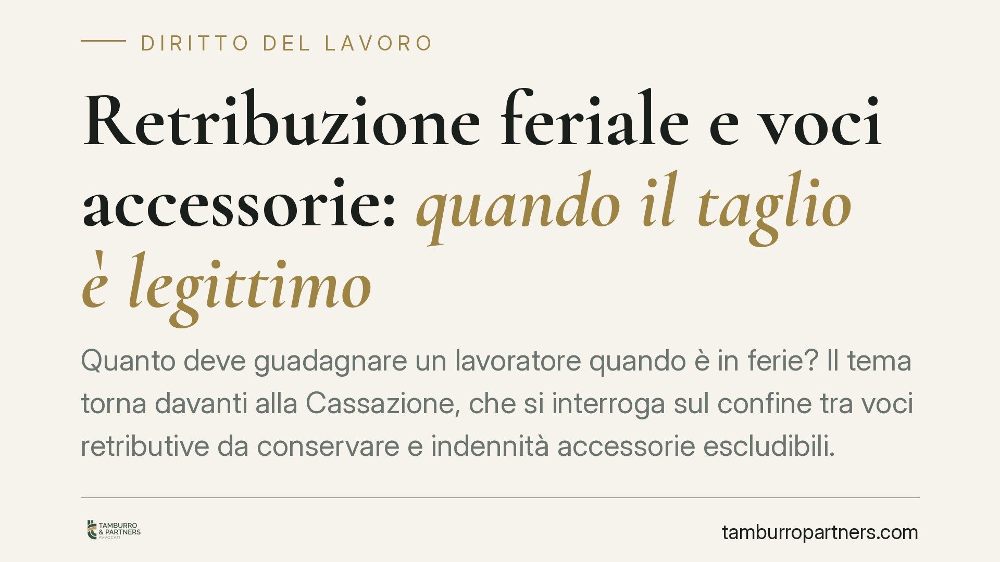

Retribuzione feriale e voci accessorie: quando il taglio è legittimo
Quanto deve guadagnare un lavoratore quando è in ferie? Il tema torna davanti alla Cassazione, che si interroga sul confine tra voci retributive da conservare e indennità accessorie escludibili. Il discrimine è l'effetto dissuasivo: il taglio non deve scoraggiare il godimento del riposo. Un principio di origine europea che incide su cedolini, contrattazione collettiva e contenzioso.

Il fatto
Il caso riguarda un macchinista di un'azienda ferroviaria che lamentava la decurtazione di alcune indennità accessorie nei periodi di ferie. La controversia, passata per la Corte d'appello di Torino, ripropone una questione classica del diritto del lavoro: la retribuzione feriale deve replicare integralmente quella percepita durante l'attività, oppure il datore può escludere alcune voci?
Una recente ordinanza della Corte di Cassazione è intervenuta sul punto. *Numero e data esatti vanno verificati nelle banche dati ufficiali prima di qualsiasi uso processuale*: riportiamo qui il principio nella sua portata sostanziale, senza attribuirgli valore di orientamento generalizzato.
Inquadramento normativo
Il riferimento interno è duplice. L'art. 36 della Costituzione garantisce al lavoratore una retribuzione proporzionata alla quantità e qualità del lavoro e, comunque, sufficiente a un'esistenza libera e dignitosa. L'art. 10 del D.Lgs. 66/2003 disciplina le ferie annuali, fissando il periodo minimo di quattro settimane e sancendone l'irrinunciabilità.
Il cuore della materia è però europeo. L'art. 7 della Direttiva 2003/88/CE impone agli Stati membri di garantire ferie retribuite. La Corte di Giustizia UE ne ha chiarito il contenuto con tre pronunce di riferimento:
- C-155/10 Williams: durante le ferie il lavoratore ha diritto alla retribuzione "ordinaria", comprensiva delle componenti intrinsecamente collegate all'esecuzione delle mansioni.
- C-539/12 Lock: vanno incluse anche componenti variabili (es. provvigioni) che costituiscono parte abituale della retribuzione.
- C-385/17 Hein: non devono invece essere computate le voci destinate a coprire spese occasionali o accessorie.
Il criterio-guida è l'effetto dissuasivo: la retribuzione feriale non può essere così ridotta da scoraggiare il lavoratore dal fruire del riposo.
Il principio della Cassazione
Il punto delicato è *come* si misura questo effetto dissuasivo. Nella specifica pronuncia in esame, l'incidenza del taglio sarebbe stata valutata non sulla singola busta paga mensile, bensì sull'incidenza percentuale rispetto alla retribuzione annua lorda.
È una lettura che merita cautela interpretativa: si tratta del criterio affermato in quel caso concreto, non di un orientamento consolidato da estendere a ogni fattispecie. La differenza pratica, tuttavia, è rilevante.
Valutare l'incidenza sul singolo cedolino significa fotografare l'impatto nel mese di ferie, dove il peso delle voci tagliate può apparire consistente. Valutarlo sul monte annuo diluisce invece quel peso: una decurtazione che incide in modo marginale sul reddito complessivo difficilmente integra un effetto dissuasivo. Lo stesso taglio, dunque, può risultare illegittimo con un metro e legittimo con l'altro.
Implicazioni pratiche
Resta ferma la distinzione operativa che governa la materia:
- Voci intrinsecamente legate alle mansioni: vanno conservate durante le ferie. Rientrano qui le indennità connesse in modo stabile e abituale al modo in cui il lavoro viene prestato (ad esempio indennità di guida, di turno fisso, premi strutturali).
- Voci accessorie o occasionali: possono essere escluse. Sono quelle legate a eventi variabili, a rimborsi o a condizioni che durante le ferie, per definizione, non si verificano.
Per il datore di lavoro, la questione diventa un esercizio di corretta qualificazione delle singole voci del cedolino. Per il lavoratore, è l'occasione per verificare se la decurtazione subita colpisca compensi realmente stabili e ricorrenti.
Cosa fare in concreto
Per il datore di lavoro:
- Mappare ogni voce retributiva distinguendo tra componenti strutturali legate alle mansioni e componenti accessorie o occasionali.
- Verificare le previsioni del CCNL applicato sul trattamento economico delle ferie: è opportuna un'analisi tecnica delle clausole rilevanti.
- Documentare i criteri di calcolo adottati, così da poterne dimostrare la coerenza in caso di contestazione.
Per il lavoratore:
- Confrontare la busta paga di un mese di ferie con quella di un mese ordinario, individuando le voci decurtate.
- Valutare se le voci tagliate siano stabili e ricorrenti oppure realmente occasionali.
- Raccogliere i cedolini su base annua: l'impatto effettivo del taglio va letto anche sul reddito complessivo, non solo sul singolo mese.
In ogni caso, prima di agire è prudente verificare numero, data e massima effettiva della pronuncia nelle banche dati ufficiali, poiché l'esito dipende dalla qualificazione delle singole voci e dal metodo di misurazione dell'effetto dissuasivo.
---
*Contributo informativo a cura di Tamburro & Partners - Avv. Giuseppe Tamburro. Non costituisce parere legale.*
Ogni storia di lavoro ha i suoi tempi.
Se gestisci HR e vuoi un confronto su contenzioso, ispezioni o licenziamenti, scrivi allo studio. Ti rispondiamo entro un giorno lavorativo.